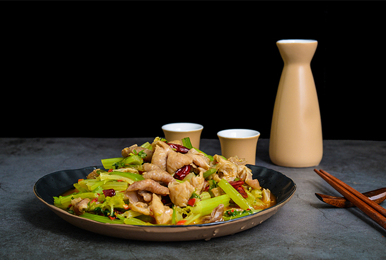
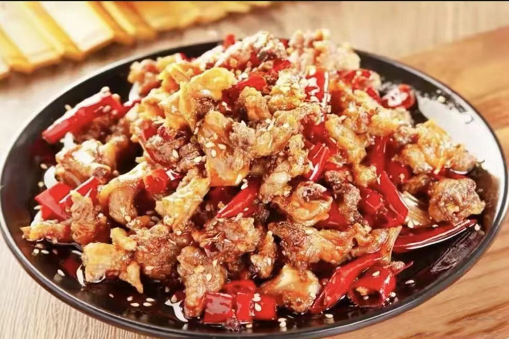

“吃在四川，味在自贡”，盐帮菜作为响当当的自贡传统餐饮品牌，以水煮牛肉、富顺豆花、自贡冷吃兔、火边子牛肉等为代表的盐帮菜品，被列入非物质文化遗产名录。在2020年省级“天府名菜”评选中，7道自贡盐帮菜品获得“天府名菜”称号，排名全省第二。
为加快推介盐帮菜，自贡重点规划建设了盐帮菜博物馆、盐帮菜体验馆，打造盐帮菜研究院、盐帮菜培训学院。2019年，自贡成功申报“中国盐帮菜之乡”称号。现在，全市有餐饮企业近8000家，就业人数达10万人以上，盐邦菜不仅在四川，也在大陆各地风风火火地推广。

四川自贡有一个比较出名的美食就是干锅兔，在当地颇受欢迎味道，就是偏咸辣的，而且制作出来的兔肉汤汁非常多，不过跟大家想象中的干锅不太一样。当地人会把兔肉切成小块，用新鲜的香菇当做蔬菜，让兔肉的口感更加丰富，还能够帮助体现。而且干锅兔都是现宰现做的，这种兔子肉质非常的紧实，非常有优势，兔肉会先放到锅里面去炸一遍，等到外皮稍微酥脆一些之后就拿出来，这个时候的兔肉是外酥里嫩，所以咬下去之后相当有层次感。

还有当地的冷吃牛肉，口感也非常不错，虽然肉质有一些干，但是腌制的相当入味，并且对于南方的小伙伴非常友好，因为这道菜并没有那么辣，咸淡也适中。虽然这道菜看起来外面有很多的辣椒，但是里面的辣椒也能够吃，而且吃起来不会觉得很呛，味道非常正宗，还能够拿来下饭。还有四川自贡的火爆牛肉以及火爆黄喉都是特色菜，如果去自贡的话一定要尝一尝。